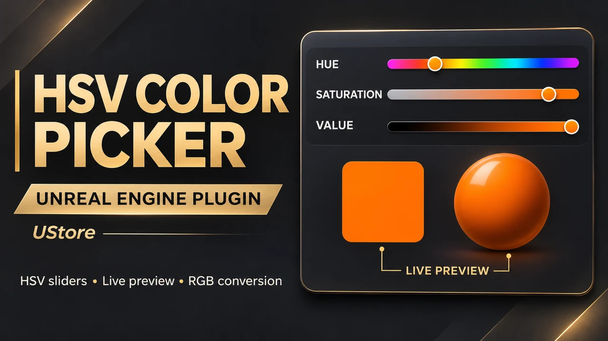

Unreal Engine 4 / 5
95%Blueprint and C++ workflows across UE4 and UE5.
GAMEPLAY PROGRAMMER / WORLD BUILDER
Unreal Engine Developer Lahore, Pakistan
I build responsive gameplay, intelligent AI, and multiplayer experiences in Unreal Engine. From the first prototype to production-ready systems, I turn ambitious ideas into games that feel great to play.
BUILT TO BE PLAYED
01 / ABOUT ME
THE PERSON BEHIND THE CODEI’m an Unreal Engine developer specializing in C++ and Blueprint. My work spans AA and indie games, multiplayer frameworks, smart AI systems, real-time visualization, and tools that help teams create faster.
I enjoy the space where creative ambition meets technical problem-solving: making a mechanic feel responsive, giving AI purpose, or finding a cleaner way to build a complex system.
My goal is to deliver results that look great and perform reliably. I enjoy collaborating with teams to turn ambitious ideas into playable experiences.
BS Computer Science · UET Lahore, 2019–2023
Read my full résumé ↗MY TECHNICAL TOOLKIT
DETAILED EXPERTISE
Blueprint and C++ workflows across UE4 and UE5.
Behavior Trees, EQS, State Trees, perception systems, and adaptive AI design.
Character systems, combat mechanics, interactions, and gameplay logic.
Interactive and responsive UI systems using UMG and Blueprint.
Replication, networking, and online gameplay experiences.
Custom editor tools, C++ and Python automation, and workflow plugins.
Scalable, modular, optimized game systems.
Profiling, reducing overhead, and improving gameplay performance.
WORDS FROM COLLABORATORS
I had the pleasure of working with Umar Razzaq during his time as an Unreal Engine Developer at Tensei Games, and he was consistently reliable, skilled, and a great teammate. Umar has strong command of Unreal Engine, solves complex problems quickly, and delivers clean, efficient work. He communicates well, collaborates easily, and always brings a positive, solution-focused attitude. I highly recommend Umar?any team would be lucky to have him.
 Ahmad AjmalSoftware Engineer
Ahmad AjmalSoftware EngineerUmar is not just a great team player, he is the kind of teammate every leader dreams of having. He picks up new technologies with lightning speed, adapts effortlessly, and always pushes the team forward with his enthusiasm and commitment. His ability to learn, contribute, and inspire others makes him an irreplaceable resource and a true driving force within our team.
 Moiz Ul HaqSenior Unreal Developer
Moiz Ul HaqSenior Unreal DeveloperI have had the pleasure of working alongside Umar Razzaq on multiple UE projects, and I cannot speak highly enough of his expertise. His ability to tackle complex problems, identify solutions, and push the boundaries of what?s possible in UE has always impressed me. Throughout our collaborations, I?ve seen him approach every challenge with creativity and precision.
 Naba AliGame Programmer
Naba AliGame ProgrammerI highly recommend working with Umar. He is a quick learner and enthusiastic about his work. He consistently brings creativity and always goes the extra mile, giving 100% to every task. It was a pleasure working with such a vigilant team player.
 Muhammad SaqibGame Developer
Muhammad SaqibGame DeveloperUmar is a true professional. Having worked with him in the same team was a great experience. I found him highly motivated and committed to team and organizational goals. With experience in technical art alongside strong analytical skills, I am sure that Umar has a long way to go. It?s been a pleasure working with him.
 Saboor IshaqUnreal Artist
Saboor IshaqUnreal ArtistWorking under Umar?s guidance has been a truly inspiring experience. He leads with clarity, trust, and support for his team?s growth. His technical expertise, adaptability, and encouraging attitude make every challenge a learning opportunity. Umar brings out the best in those around him, a senior who motivates through example.
 Ali Raza KhanUnreal Developer
Ali Raza KhanUnreal Developer02 / SELECTED WORK
GAMES. SYSTEMS. EXPERIENCES.Explore gameplay, AI, tools, and interactive worlds. Open any project to watch the video and read more about the work.
Showing 9 of 44 projects
Gameplay & System
Maelstrom brings fantasy naval combat into a crowded arena of warships, cannon fire, and dangerous waters. The showcase moves between different ships and large battles, giving a sense of the game's combat presentation and the amount of activity players must read during an encounter.
Project details ↗Gameplay & System
A runtime character builder developed in Unreal Engine 5 with C++. Players can adjust facial features, hairstyle, body shape, clothing, accessories, and skin tone while seeing the result on the character immediately. The showcase moves through appearance controls and different outfit combinations in a dedicated customization interface.
Project details ↗Gameplay & System
A spline-based animation system in Unreal Engine 5 that uses Niagara to move particles, text, and shapes along editable paths. The demonstration places luminous routes over a three-dimensional map, showing paths unfolding across terrain and connecting points of interest. Color and movement speed can be controlled to change the presentation. The system explores how the same path-driven approach can support map routes, animated labels, visual storytelling, and effects that need to follow a defined curve.
Project details ↗Gameplay & System
The DIShooter trailer presents a first- and third-person shooter built in Unreal Engine 5 around voice-controlled squad play. Its cinematic sequence combines moody environments, character shots, combat effects, and interface glimpses to introduce the atmosphere and tactical focus of the project. The underlying squad system lets players issue voice commands to AI teammates and coordinate behavior during combat. This trailer is the edited presentation of that experience; the separate gameplay showcase provides a more direct look at the playable action.
Project details ↗Gameplay & System
An extended gameplay showcase from DIShooter, showing the player character moving through a dark combat environment, engaging enemies, and interacting with the game's tactical interface. The footage connects character movement, shooting, effects, and on-screen feedback within a continuous play session. DIShooter's broader design combines first- and third-person shooting with voice-command-driven squad AI. This entry focuses on the playable presentation, while the companion trailer emphasizes the project's cinematic direction.
Project details ↗Gameplay & System
A MetaHuman drive-thru assistant presented within a virtual restaurant ordering environment. The footage moves from the surrounding scene to the service counter, where the digital character and order interface become the focus of the interaction. The project connects speech services, language models, and WebSockets to support real-time dialogue, character gestures, and lip-sync. It explores how a conversational character can sit inside a familiar service workflow instead of appearing as a separate text-only chatbot.
Project details ↗Trailers
A SoundHound Burger Electra demonstration centered on a digital restaurant assistant and a text-to-speech interaction. The video keeps the assistant framed within a circular, futuristic display while its visual presentation changes throughout the session. The work explores the presentation layer of a voice-enabled ordering experience: keeping the character, interface, and spoken response together in one scene. The showcase documents that interaction.
Project details ↗Gameplay & System
A vehicle showcase built in Unreal Engine 5, following a sports car across a snow-covered mountain environment. The camera keeps the car and terrain in view while the vehicle changes position, with tire tracks and winter lighting helping communicate movement through the scene. The project combines automotive presentation with an outdoor driving setting. Its focus is the relationship between the vehicle, surface response, and surrounding landscape.
Project details ↗Action adventure / In development
I am working on Zhai, a third-person open-world action-adventure set in Il'Navir. Players recover lost memories, unlock elemental abilities, and shape their combat style while exploring a world of rival tribes. The game is listed on Steam with its release date to be announced.
Project details ↗03 / SERVICES
FROM IDEA TO INTERACTIONPractical engineering and creative problem-solving for your next game or real-time experience.
Expert implementation of character systems, combat mechanics, player interactions, and core gameplay features in Unreal Engine. I build responsive gameplay with clean C++ architecture and optimized Blueprint logic that scales with your project.
Advanced AI development using Behavior Trees, EQS, State Trees, and perception systems to create intelligent, adaptive NPCs. From enemy combat behaviors to companion logic, I design AI that responds naturally to player actions.
Robust networking solutions with replication, authority management, and lag compensation. I build online experiences that handle client-server communication reliably across different network conditions.
Custom editor tools, automation scripts, and workflow-enhancing plugins built in C++ and Python. These solutions streamline development pipelines and reduce repetitive work in Unreal Engine.
Profiling and optimization to improve frame rates and reduce overhead. I identify bottlenecks in rendering and gameplay code so projects run smoothly across target platforms.
Interactive, responsive UMG interfaces built with Blueprint. I craft menu systems, HUD elements, and in-game UI that scales across screen sizes and complements a game?s style.
Use AI-assisted workflows and Model Context Protocol integrations to support game prototyping, tooling, and production tasks in Unreal Engine.
FAB / PUBLISHINGS
TOOLS AND ASSETS FOR CREATORSBrowse my Fab listings and asset previews.

An Unreal Engine plugin with Hue, Saturation, and Value sliders, immediate color preview, and automatic HSV-to-RGB conversion. Blueprint access supports color controls in interactive projects.
View on Fab ↗04 / HIRE ON
LET'S BUILD YOUR NEXT WORLDChoose the platform you prefer. Tell me about your gameplay, AI, multiplayer, or real-time project and we can plan the next step.
04 / LET’S CONNECT
Have a project in mind, need help with a technical challenge, or want to talk games? I’d love to hear from you.
umarrazzaq8899@gmail.com